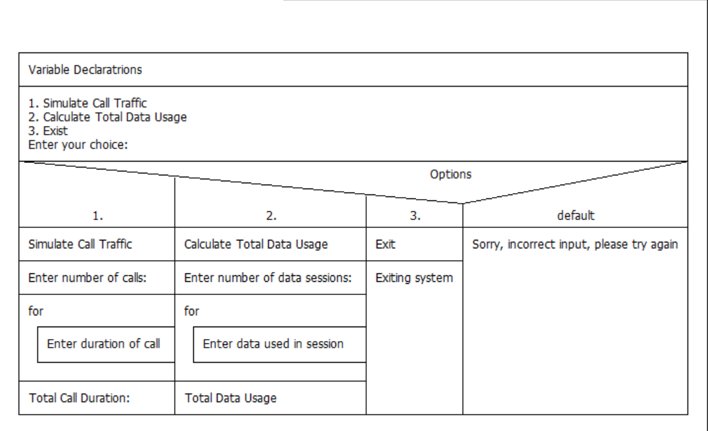
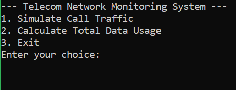
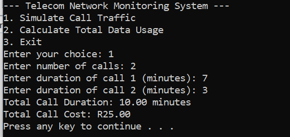
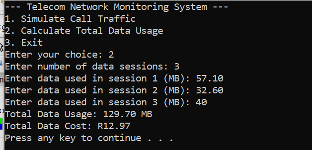

1
Call traffic
Input the number of calls and duration of each call in minutes. The program adds the durations and multiplies the total by R2.50 per minute.
Documented example: 7 + 3 = 10 minutes; total R25.00.
A menu-driven command-line program that accepts simulated call durations and mobile data session usage, adds the values and calculates example charges using fixed rates.

Cover includes screenshots of the original application output from the uploaded report.
The source archive contains a C program and Code::Blocks project file. The program displays three choices: simulate call traffic, calculate total data usage, or exit. A switch selects the action, for loops collect individual values, and arithmetic calculates totals and example costs. Only one operation is performed per program run.
Input the number of calls and duration of each call in minutes. The program adds the durations and multiplies the total by R2.50 per minute.
Documented example: 7 + 3 = 10 minutes; total R25.00.
Input the number of data sessions and each session's usage in MB. The program sums usage and multiplies the total by R0.10 per MB.
Documented example: 57.10 + 32.60 + 40.00 = 129.70 MB; total R12.97.
Option 3 prints an exit message. Invalid menu selections print an error message instead of running calculations. The program does not connect to a network or collect real carrier/billing records.
The screenshots below were extracted from the supplied development document. The identifying student number on the algorithm screenshot has been covered for public posting.




Employers can enter call durations or data usage, run the calculation and inspect a console-style output. This browser tool independently recreates the same fixed-rate calculation rules; it is not the original compiled C program or a live telecom monitoring service.
Structured C programming, variables and types, scanf/printf input and output, switch selection, counted for loops, floating-point arithmetic, totals and console reporting.
This is a basic educational calculator, not live traffic monitoring. The original C program does not validate negative entries or malformed input, save records to files, handle multiple menu tasks per run or connect to a telecom API. Input validation, persistence and further testing are reasonable future improvements.
For safer public distribution, the source files are provided without compiled Windows executables and with student-number filenames replaced. The C calculation code itself is preserved. The Code::Blocks project reference was updated to point to the included source file.
To compile locally: gcc -std=c11 -Wall -Wextra telecom_network_monitor.c -o telecom_network_monitor